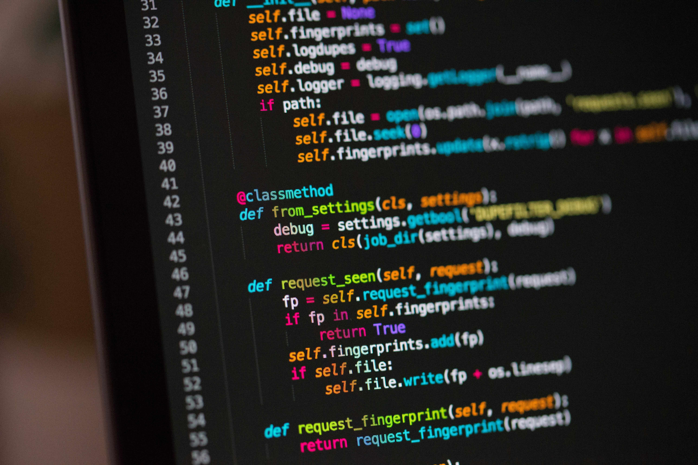

Фритрек и нулевой спринт: Подготовка к работе

</HTML>
Это было самое начало пути. На этом этапе важно было проникнуться основами и настроиться на учёбу. И, возможно, подумать, как новые знания могут повлиять на ваше будущее.
Было интересно приступить к чему-то новому. Вдохновение лилось...